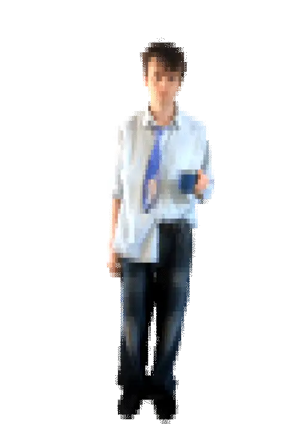
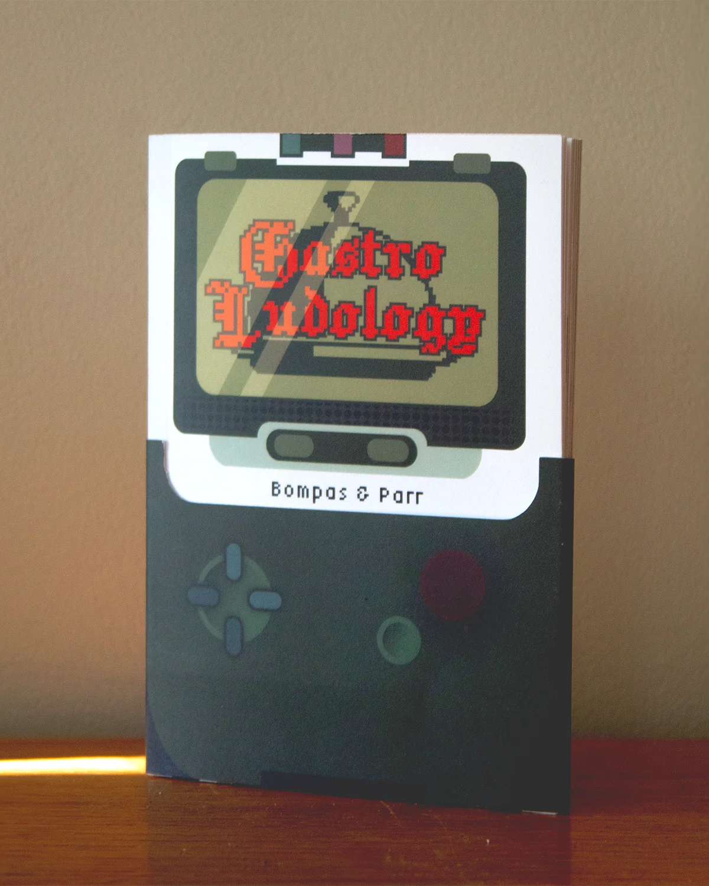

WELCOME
To My
Portfolio

Hello !
My name is Jacob Lloyd David. Originally from Wales, I am a creative designer living and working in London. With a passion for making and pushing my skills; id consider myself a Swiss Army knife of creation, there is nothing I can not do! (Or won’t give a good go).
I pride myself in being able to produce outcomes with little to nothing. Using what is available to me to conceive creative solutions to all challenges that come my way ! Pressure makes diamonds after all…
Anyways, enjoy exploring my portfolio. It is a self made website so please forgive any bugs.
Forever and always, a work in progress.

.Gastro Ludology
.Allotment City
Personifying the unrealistic body standards of modern vegetables into a gritty criminal city, built upon expectation, power and injustice.
Using:
-After Effects animation
-Photoshop scene building
Here is where you can write the much longer, more detailed description of the project. Explain the process, the inspiration, and the technical challenges you overcame!
.Hairspray Tour - Trailer
Created Whilst on Internship at Feast Creative,
This trailer was created during my internship at Feast Creative, where I worked on direction and motion graphics alongside their team. Original key art was provided by external creators on the Hair Spray UK tour team.
Here is where you can write the much longer, more detailed description of the project. Explain the process, the inspiration, and the technical challenges you overcame!